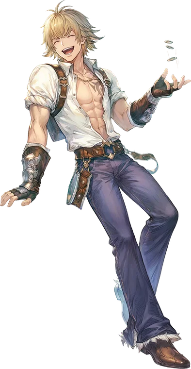

Second tier
Blacksmith
Blacksmith is the primary advancement option for the Merchant. In keeping with the Merchant's strategy of "damage over all else," the Blacksmith class has virtually nothing in the way of defensive options, relying on good equipment and exceptional damage output to see it through most encounters.
Offensively, the Blacksmith has two primary strategies. The first is to focus on self-buffs and deliver damage through autoattacks. In exchange for no longer affecting party members, the Blacksmith buffs have been made considerably stronger, and gain additional bonuses that apply only to autoattacks.
The second strategy is the more familiar one to the Merchant: build up Extort stacks through either Merchant's Extort or Blacksmith's Rush Down, then expend them all for tremendous burst through either Merchant's Mammonite or Blacksmith's Axe Tornado, supplemented with Hammer Fall to provide a bit more AoE damage and an additional source of Stun to sneak through some more challenging encounters.
In addition to these offensive skills, the Blacksmith also has access to a suite of supportive skills. Though they require some time investment to set up in crafting the required components, they allow the Blacksmith to tune the party's weapons and armor to deal with the varied situations they will face, making them an invaluable member of any party even beyond their exceptional DPS.

Where it sits
Skill list
Skills
Grouped the way the tree is grouped. Names, types, targets and the numbers behind every level come from the player wiki, so they match what you see in game.
Buff Skills3 skills
-
Weapon PerfectionSupportiveSelfLv 10
Increases own critical damage for a long duration.
Removes the size penalty of all weapons, while also increasing the Critical Damage of autoattacks. Has full uptime.
Level by level
Level Critical Damage Bonus 1 2% 2 4% 3 6% 4 8% 5 10% 6 12% 7 14% 8 16% 9 18% 10 20% -
Adrenaline RushSupportiveSelfLv 10
Increases own ASPD and Hit rate for a long duration.
Increases the user's Attack Speed and Hit Rate for a duration. Has full uptime.
Level by level
Level Attack Speed Bonus Hit Bonus 1 0.5 2 2 1 4 3 1.5 6 4 2 8 5 2.5 10 6 3 12 7 3.5 14 8 4 16 9 4.5 18 10 5 20 -
Power ThrustSupportiveSelfLv 10
Increases own ATK and DEF Pierce for a long duration.
Increases the damage of all skills used by a small amount, while greatly increasing the damage and Defense Pierce of autoattacks. Has full uptime.
Learn firstAdrenaline Rush Lv3, Weapon Perfection Lv3
Level by level
Level Damage Bonus Defense Pierce 1 2% ATK 3% 2 4% ATK 6% 3 6% ATK 9% 4 8% ATK 12% 5 10% ATK 15% 6 12% ATK 18% 7 14% ATK 21% 8 16% ATK 24% 9 18% ATK 27% 10 20% ATK 30%
Extortion Skills3 skills
-
Rush DownPhysicalEnemyLv 10
Charges a distant enemy and generates an Extort stack.
The user rushes to a distant target, dealing significant damage that can be Critical. Generates an Extort stack on hit, but has increased cooldown for each Extort stack on the user.
Level by level
Level Damage SP Cost 1 275% 11 2 300% 12 3 325% 13 4 350% 14 5 375% 15 6 400% 16 7 425% 17 8 450% 18 9 475% 19 10 500% 20 -
Hammer FallOffensiveGroundLv 10
Slams a giant hammer, dealing AoE damage and [[Status Effects#Stun|Stun].
Slams the ground, dealing damage with a chance to stun all enemies in a small area and generates one stack of Extort.
Level by level
Level Damage Stun Chance SP Cost 1 265% 5% 16 2 280% 10% 17 3 295% 15% 18 4 310% 20% 19 5 325% 25% 20 6 340% 30% 21 7 355% 35% 22 8 370% 40% 23 9 385% 45% 24 10 400% 50% 25 -
Axe TornadoPhysicalSelfLv 10
Spends all Extort stacks for big AoE damage that is guaranteed to Crit.
Spins with the axe, dealing heavy damage to all enemies around the user. If the user has any Extort stacks, consumes all of them to deal massively increased damage that is guaranteed to be Critical.
Learn firstHammer Fall Lv3, Rush Down Lv3
Level by level
Level Damage SP Cost 1 220% 22 2 240% 24 3 260% 26 4 280% 28 5 300% 30 6 320% 32 7 340% 34 8 360% 36 9 380% 38 10 400% 40
Support Skills5 skills
-
Steel HeartPassiveLv 10
Increases own Neutral resistance and potion effectiveness.
Increases the Neutral Resist and Potion Effectiveness of the user. The only truly defensive skill in the tree.
Level by level
Level Neutral Resistance Potion Effectiveness 1 1% +5% 2 2% +10% 3 3% +15% 4 4% +20% 5 5% +25% 6 6% +30% 7 7% +35% 8 8% +40% 9 9% +45% 10 10% +50% -
Maximize PowerUtilitySelfLv 10
Immediately generates 5 Extort stacks and guarantees Crits for a short duration.
The user focuses all of their strength into a short burst, maximizing their damage output for a short duration. Immediately generates five stacks of Extort and increases the user's Crit Rate by 100 for five seconds.
Learn firstWeapon Perfection Lv3, Steel Heart Lv3, Rush Down Lv3
Level by level
Level Cooldown 1 72s 2 69s 3 66s 4 63s 5 60s 6 57s 7 54s 8 51s 9 48s 10 45s -
Equipment MaintenancePassiveLv 10
Improves the duration and effects of Weapon Reinforcement and Armor Reinforcement.
Increases the duration and effectiveness of Weapon and Armor Reinforcement.
Works withWeapon ReinforcementArmor Reinforcement
Level by level
Level Duration Bonus 1 20s 2 40s 3 60s 4 80s 5 100s 6 120s 7 140s 8 160s 9 180s 10 200s -
Weapon ReinforcementSupportivePartyLv 5
Use materials created in quests to buff party weapons.
Reinforces the weapons of the party, providing a different beneficial effect depending on which level is used. Each level except level 1 requires a specific Maintenance Kit, which must be crafted at the Blacksmith's Guild.
At Level 1, this skill gives additional Neutral Property damage to physical attacks and increases the Weapon Attack of all party members.
Learn firstEquipment Maintenance Lv1
Level by level
Level Required Kit Effect 1 None Neutral property damage +4% per skill level; Weapon ATK +3 per Equipment Maintenance level 2 Sharpening Kit [fixme] 3 Accelerator Kit [fixme] 4 Piercing Kit [fixme] 5 Master's Weapon Kit [fixme] -
Armor ReinforcementSupportivePartyLv 5
Use materials created in quests to buff party armor.
Reinforces the armor of the party, providing different beneficial effects depending on which level is used. Each level except level 1 requires a specific Maintenance Kit, which must be crafted at the Blacksmith's Guild.
At Level 1, this skill gives additional Hard and Soft defense to all party members.
Learn firstEquipment Maintenance Lv1
Level by level
Level Required Kit Effect 1 None Hard Defense +10 per skill level; Soft Defense +4 per Equipment Maintenance level 2 Spike Kit [fixme] 3 Nullifier Kit [fixme] 4 Regenerator Kit [fixme] 5 Master's Armor Kit [fixme]
From the players
See it played
No videos for this class yet. Record your gameplay and post it in the Discord.
Come find out what changed
Make an account, grab the client, and come and see what changed.